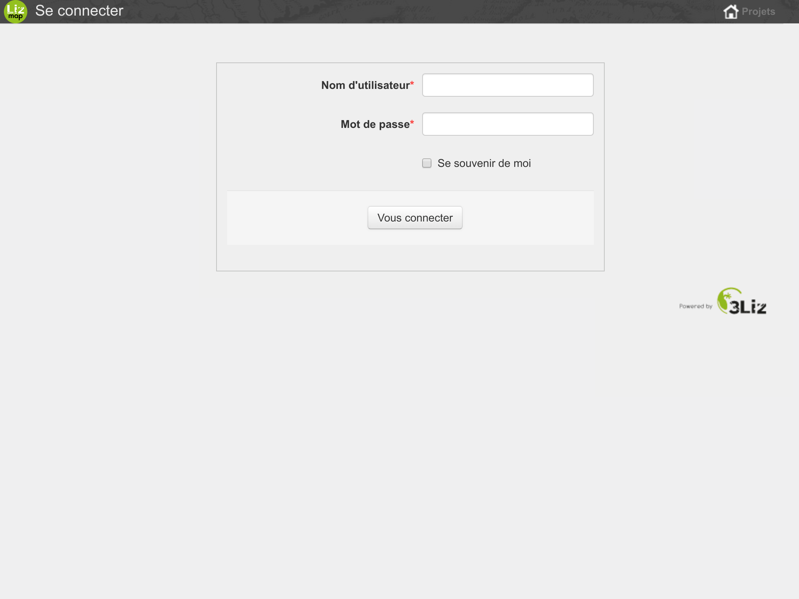

Installation et lancement du GeoPoppy sur tablette Android
Introduction
Ce document présente comment utiliser l'application UserLand pour installer et lancer l'outil GeoPoppy sur la tablette ou téléphone Android.
Les applications du GeoPoppy
L'application principale qui sera utilisée pour visualiser les cartes et saisir des données sur le terrain est l'application Lizmap. Elle est consultable via un navigateur web. Nous conseillons vivement Firefox pour Android.
Si vous êtes géomaticien, vous pourrez aussi utiliser les autres services disponibles pour consulter les données, modifier les configurations, car le GeoPoppy embarque aussi:
- un serveur de base de données PostgreSQL
- un serveur FTP pour naviguer dans les répertoires poser des fichiers sur le GeoPoppy
- un serveur QGIS pour proposer des cartes et des données spatiales.
Le GeoPoppy est l'équivalent d'un mini-serveur embarqué sur la tablette. Pour pouvoir utiliser les différents services depuis son ordinateur, il faut que les deux appareils soient connectés sur le même réseau WIFI.
Installation
GeoPoppy peut être utilisé sur tablette ou smartphone fonctionnant sur système d'exploitation Android. Il utilise le logiciel UserLand qui permet de charger des images contenant l'ensemble des logiciels nécessaires.
Installer le logiciel UserLand
Pour pouvoir continuer, connecter d'abord la tablette à internet (via WIFI ou 3G), puis:
- Installer l'application UserLand depuis l'application Google Play
- Une fois installée, lancer cette application. Elle affiche par défaut 3 onglets:
- Applis
- Sessions
- Systèmes de fichiers
- Dans l'onglet Applis, cliquer sur le bouton Rafraîchir en haut à droite, puis attendre la fin de l'opération.
Ce logiciel UserLand peut utiliser des images préparées à l'avance. L'image GeoPoppy doit d'abord être envoyée sur la tablette depuis votre ordinateur (ou téléchargée depuis internet si elle est disponible via une URL).
Brancher la tablette à l'ordinateur
Une fois la tablette branchée par cable USB à votre ordinateur, le message suivant doit s'afficher: Autoriser accès aux données de la tablette ? L'appareil connecté va pouvoir accéder aux données se trouvant sur cette tablette.
- Cliquer sur le bouton Autoriser,
- Ouvrir votre explorateur de fichiers sur votre ordinateur
- Trouver le disque de votre tablette puis naviguer dans le dossier de téléchargement:
Tablet / Download - Y copier le fichier image qui vous a été fourni, par exemple le fichier
geopoppy32-debian-rootfs.tar.gz
Une fois le fichier d'image compressée chargé sur votre tablette, vous pouvez retourner sur la tablette pour installer cette image dans UserLand.
Charger l'image dans UserLand
Nous allons d'abord créer un système de fichiers à partir de cette image, via le logiciel UserLand:
- Ouvrir le logiciel UserLand
- Aller dans le 3ème onglet Systèmes de fichiers
- Cliquer sur le bouton + en haut à droit pour créer un nouvel item. Un formulaire s'affiche, renseigner:
- Nom du système de fichiers: GeoPoppy (libre)
- Nom d'utilisateur: geopoppy (en minuscules)
- Mot de passe: geopoppy (en minuscules)
- Mot de passe pour VNC: geopoppy (en minuscules)
- Système de fichiers: Debian
- Cliquer sur Show advanced options puis sur le bouton SELECT BACKUP FILE TO IMPORT et sélectionner dans votre dossier Téléchargement l'image GeoPoppy, par exemple
geopoppy32-debian-rootfs.tar.gz
- Valider avec l'icône disquette en haut à droite
Une fois le système de fichier créé, nous pouvons créer une nouvelle session à partir de ce système:
- Ouvrir l'application UserLand si besoin
- Aller dans le 2ème onglet Sessions
- Cliquer sur le bouton + en haut à droit pour créer un nouvel item. Un formulaire s'affiche, renseigner:
- Nom de la session: GeoPoppy (libre)
- Système de fichier: choisir le système précédemment créé, par exemple GeoPoppy: Debian
- Type de service: SSH
- Nom d'utilisateur: geopoppy
- Valider avec l'icône disquette en haut à droite

Une fois ces 2 étapes accomplies, nous allons pouvoir lancer l'application GeoPoppy depuis le logiciel UserLand
Lancement de l'application GeoPoppy
Maintenant que l'image du GeoPoppy a bien été chargée dans l'application UserLand, nous allons pouvoir l'utiliser.
Dans un premier temps, vérifier que vous êtes bien connecté en WIFI sur le même réseau que votre ordinateur, puis procéder ainsi:
- Ouvrir si besoin le logiciel UserLand
- Aller sur le 2ème onglet Sessions
- Cliquer sur le nom de la session créée précédemment, par exemple GeoPoppy
- Une nouvelle fenêtre noire s'affiche (un terminal ou invite de commande), et vous demande votre mot de passe.
- Renseigner avec le clavier Android le mot de passe geopoppy (en minuscules). Le mot tapé ne s'affiche pas, ni aucune étoile, mais c'est normal.
- Une fois le mot de passe tapé, valider avec la touche Entrée ou Suivant du clavier Android.
- Une série de commandes doit s'afficher, qui décrit le lancement des services:
- postgres: serveur de base de données PostgreSQL, pour stocker les données
- nginx: serveur Web, pour afficher l'application Lizmap
- redis: base de données de cache, pour stocker les sessions
- php: environnement de script PHP, pour faire fonctionner Lizmap
- ftpd: serveur FTP, pour envoyer des fichiers sur la tablette
- supervisor: outil chargé de lancer le serveur cartographique QGIS Server
- Un message final GEOPOPPY IP ADDRESS affiche l'adresse IP de la tablette, qui pourra être utilisé pour se connecter depuis l'ordinateur aux différents services (PostgreSQL, FTP)
Une fois ces services chargés, vous pouvez réduire la fenêtre de UserLand, mais surtout pas la fermer.
Utilisation
Pour lancer l'application Lizmap sur la tablette, il faut d'abord ouvrir un navigateur Web. Nous conseillons Chrome ou Firefox pour Android.
Ensuite, vous pouvez ouvrir l'URL https://localhost:2080/lizmap/index.php
Attention, ne pas oublier le s après http.
Une fois la page chargée, un message d'erreur est présenté. C'est dû au certificat utilisé pour le HTTPS, pour lequel il est nécessaire d'ajouter une exception. Par exemple sous Chrome:
- A l'arrivée de la page:
- Cliquer sur Paramètres avancés puis cliquer sur le lien Continuer vers le site localhost (dangereux)
Vous arriverez alors à la page d'accueil de Lizmap. qui est vide. Il faut vous connecter via le bouton Connexion de la barre en haut à droite, puis utiliser vos identifiants OpenDFCI dans le formulaire affiché:

- Une fois connecté, vous accédez à la page d'accueil, qui montre les cartes disponibles:

- Pour voir une carte, il faut cliquer (taper) sur une des imagettes, par exemple Espace de coproduction dans la copie d'écran ci-dessus. Vous arrivez alors à la carte choisie.
Menu GeoPoppy
Dans la barre de menu de gauche, vous pouvez accéder au menu GeoPoppy via l'icône avec les doubles-flèches qui tournent. Ce menu ouvre un panneau à gauche de la carte (ou en plein écran en mode portrait), qui propose les actions suivantes:
- Test connection Ce bouton tester la connection vers la base de données centrale, pour savoir si on peut ensuite lancer la synchronisation entre la base de données du clone et la base centrale
- Synchronize database Lance la synchronisation bidirectionnelle entre la base de données locale de la tablette et la base de données centrale. Les modifications du serveur central sont appliquées sur la base de la tablette, puis les modifications réalisées sur la tablette sont poussées sur le serveur central.
- Synchronize media Ce bouton permet d'envoyer les photos enregistrées sur la tablette lors de l'utilisation des formulaires d'édition de la carte. Ces photos sont envoyées sur le serveur FTP central.
- Fullscreen Ce bouton permet de passer la carte en mode plein-écran, ou de revenir au mode classique.
Pour pouvoir fonctionner, toutes les actions, sauf Fullscreen, ont besoin d'avoir une connexion internet, pour pouvoir dialoguer avec le serveur central (base PostgreSQL ou serveur FTP). Vérifier que votre connexion est stable avant de lancer les synchronisations.
Trucs et astuce UserLand et GeoPoppy
UserLand peut être considéré comme le moteur de GeoPoppy. Voici quelques manipulations à effectuer si vous rencontrez des soucis de fonctionnement.
Utilisation du GPS
- Veillez à bien lancer le GPS de votre tablette avant de lancer le navigateur et de charger la page de la carte Lizmap.
- Ouvrir le navigateur et charger la carte Lizmap
- Dans le menu de gauche, cliquer sur le bouton avec un disque dans un cercle
- Un message s'affiche à l'écran, vous demandant la permission d'utiliser le positionnement: autoriser.
- Après quelques secondes, la carte doit être recentrée sur votre position
- Pour désactiver le positionnement automatique, vous pouvez fermer le menu ou cliquer sur le bouton Arrêter
Relancer l'application Lizmap
Dans votre navigateur, si votre session a expiré, ou si vous souhaitez relancer la carte, vous pouvez cliquer sur la flèche qui tourne située à côté du champ avec l'adresse. Cela permet de recharger complètement la carte.
Redémarrage des services du GeoPoppy
Lorsque vous avez lancé le GeoPoppy, vous avez tapé votre mot de passe, puis laissé ouvert l'invite de commande (interface avec un fond noir): voir le chapitre précédent sur le démarrage du GeoPoppy.
Pour redémarrer les service du GeoPoppy sans arrêter la machine virtuelle UserLand, vous pouvez enchaîner les opérations suivantes:
- Dans l'invite de commande, taper le mot
exitpuis valider avec le bouton Entrée (ou Aller à) du clavier. Cela ferme l'invite de commande - Dans UserLand, dans le 2ème onglet Sessions, taper sur le nom de votre session GeoPoppy, cela réouvre l'invite de commande, et vous demander le mot de passe
geopoppy. - Une fois le mot de passe validé, les services sont tous redémarrés (comme lors d'un démarrage normal).
Redémarrage complet du GeoPoppy
Si vous souhaitez redémarrer l'ensemble UserLand et GeoPoppy de manière complète, vous pouvez suivre les étapes suivantes:
- Dans l'invite de commande, taper le mot
exitpuis valider: cela ferme l'invite de commande - Dans UserLand, dans le 2ème onglet Sessions, appuyer longtemps sur le nom de la session, puis sélectionner Tuer le service
- Dans le 1er onglet Applis, appuyer longtemps sur Debian, puis sélectionner Arrêter l'appli
- Fermer UserLand en cliquant sur le bouton système pour afficher toutes les applications, puis la croix
Pour relancer les services, faire comme le démarrage: lancer UserLand, aller dans le 2ème onglet et appuyer sur la session GeoPoppy, puis à l'invite de commande, taper le mot de passe geopoppy puis attendre le démarrage des services.